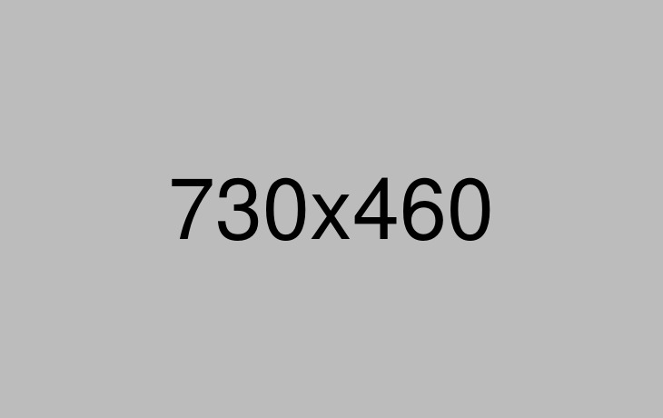

Childhood anxiety is more common than many realize. It can manifest as excessive worry, physical complaints (stomachaches), irritability, or avoidance of certain situations. Understanding the signs is the first step toward providing support.
Children look to adults for cues. When we remain calm and empathetic, we help regulate their nervous system. Simple routines, predictable transitions, and validating their feelings ("I see you're worried, and that's okay") build安全感.
We teach children "balloon breathing" (inflate the belly like a balloon) and the 5-4-3-2-1 grounding technique: name 5 things you see, 4 you can touch, 3 you hear, 2 you can smell, 1 you can taste. These tools empower children to manage anxiety in the moment.
For persistent anxiety, our counselors work with families to develop coping plans and, if needed, coordinate with outside therapists.